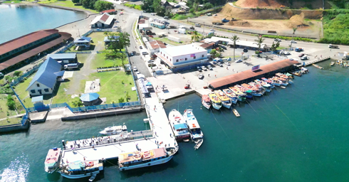
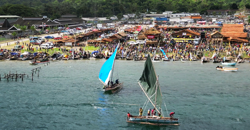

STRATEGIC PRIORITY AREAS
Promoting agriculture, MSMEs, fisheries, and tourism development to create job opportunities and improve livelihoods.
The Milne Bay Provincial Development Plan (IPDP) 2023-2027 is structured around 12 Strategic Priority Areas (SPAs), each targeting key sectors of development. Below is an overview of each SPA, including goals, projects, and progress updates.
Strategic Economic Investments
Agriculture, MSMEs, Fisheries, Tourism
Infrastructure Development
Roads, Bridges, Wharves, ICT, Energy
Health & Well-being
Hospitals, Rural Clinics, Health Workforce
EDUCATION & SKILLS DEVELOPMENT
Schools, Teacher Training, TVET
Law & Justice
Policing, Courts, Community Safety
National Security
Naval Base, Border Security
Public Finance & Revenue Management
Internal Revenue, Budget Allocation
Public Service & Governance
Digitalization, Statistics
Research, Science & Technology
Agriculture, Medical, Environment
Climate Change & Environment
Conservation, Disaster Risk Reduction
Youth & Women Empowerment
Gender Equality, Youth Programs
Strategic Partnerships
NGOs, Churches, International Donors